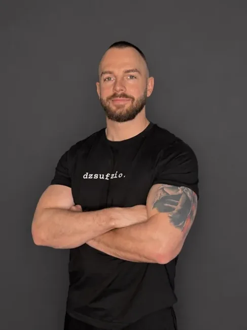

Kirilla Tibor
masszőr és csontkovácsKirilla Tibor vagyok, masszőr és csontkovács. Személyi edzőként kezdtem, majd egyre inkább a manuális és lágyszöveti technikák felé fordultam. Fontos számomra az elméleti tudás és a gyakorlati tapasztalat összekapcsolása.
Ismerj meg közelebbről
Fiatal korom óta fontos szerepet tölt be az életemben a mozgás. Egyéni és csapatsportokban is kipróbáltam magam, és közben sérülésekkel is találkoztam. Akkor még kevésbé tudtam, hogyan érdemes ezekkel foglalkozni.
Egy időre más területen kezdtem dolgozni, de hosszú ideig ott motoszkált bennem, hogy a sport és az egészséges életmód világában szeretnék elhelyezkedni. Végül személyi edzőként indultam el ezen az úton, majd továbbképeztem magam.
Szakmai hátterem és szemléletem
Először a lágy csontkovácsolás alapjait sajátítottam el. Ezt svédmasszázs- és triggerpontmasszázs-képzés, majd fasciával és köpölyözéssel foglalkozó kurzusok követték.
A Dzsufizióhoz csatlakozva először megfigyelőként, majd ellenőrzés mellett gyakorolhattam a tanultakat. Fontos tapasztalat volt, hogyan kapcsolódik össze az elmélet a vendégekkel végzett munkával. A Dzsufizio módszer® közös alapjaiból dolgozunk, az egyéni helyzethez igazodva.
A hazai képzések után az iThrust Academy Basic Osteopathic Manipulation Techniques and Clinical Assessment tanúsítványát is megszereztem. A tanulást és a gyakorlati fejlődést azóta is a munkám részének tekintem.
A személyes alkalom mellett a mindennapi mozgás és a terhelés átgondolását is fontosnak tartom. Olyan teendőkben érdemes gondolkodnunk, amelyek a saját életviteledbe is beilleszthetők.
Milyen helyzetekben kereshetsz
Ha izomfeszüléssel, merevséggel vagy a hétköznapi mozgást zavaró kellemetlenséggel érkezel, átbeszéljük, milyen közérzetjavító szolgáltatás jöhet szóba. Fontos az is, milyen mozgáshoz és terheléshez szeretnél visszatérni.
Szolgáltatásaink a fizikai közérzet javítását szolgálják. Nem helyettesítik az orvosi vizsgálatot, diagnózist, kezelést vagy a szükséges gyógytornát.
Mire számíthatsz az első alkalommal
Információgyűjtéssel és az előzmények megbeszélésével kezdünk. Rákérdezek a sérülésekre, műtétekre és az esetleges orvosi korlátozásokra. A megfigyelt mozgás és a visszajelzéseid segítenek az alkalom megtervezésében; szükség esetén más szakember felkeresését javaslom.
Videók a munkámról
Ugrás az időpontfoglaláshozVideógaléria 6 videó
1. videó
2. videó
3. videó
4. videó
5. videó
6. videó
Időpontfoglalás
Szeretettel várlak a Dzsufiziónál, Budapest XXI. kerületében. Nézd meg az aktuális árakat; ha kérdésed van, írj nekünk.